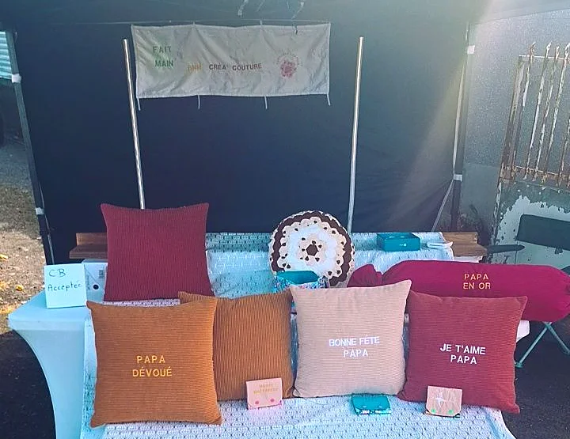
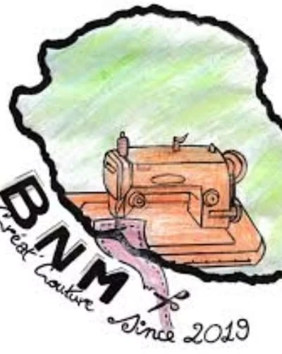
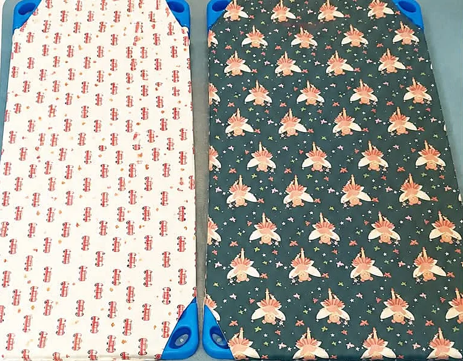

Couture & créations faites main · La Rivière Saint-Louis
BNM CREA Couturebrodé au prénom, cousu avec passion
Draps de lit Picot, serviettes de cantine, sacs pochons, coussins personnalisés et déco maison : des créations artisanales, réalisées à la main à La Réunion depuis 2019.
27 Route de Cilaos, La Rivière Saint-Louis · 0692 77 67 01
L'atelier
Une machine à coudre au cœur de l'île
Le logo de BNM CREA Couture dit tout : une machine à coudre dessinée au crayon sur la carte de La Réunion, un ruban rose qui s'en échappe, et la date qui compte, since 2019.
À l'atelier de la Route de Cilaos, l'équipe confectionne des créations utiles et jolies : le linge des tout-petits pour la crèche et l'école, des coussins brodés de messages tendres, des sacs, des accessoires et de la déco pour la maison.
« Venez découvrir nos créations artisanales, réalisées avec passion. »
Crèche, maternelle & école
Le dodo tout doux à l'école !Les kits des Ptits Bou'w Chou
Des accessoires aussi pratiques que jolis, confectionnés avec soin et personnalisés avec la broderie du prénom de votre enfant. Pour préparer la rentrée de vos Ptits Bou'w Chou de manière originale.

Draps de lit Picot
Tout doux et confortables, idéals pour la sieste à l'école ou à la crèche.
Serviettes de cantine
Pratiques et jolies, pour un repas tout en couleur, brodées au prénom.
Sacs pochons
Parfaits pour ranger le doudou, les affaires de rechange et bien plus encore.
Serviettes essuie-main
Confectionnées avec soin, assorties au reste du kit.
Trousses & sacs à dos
À personnaliser selon vos préférences.
Essayez la broderie
Le prénom de votre enfant, brodé sur son pochon
Choisissez un tissu
Princesses, champignons, fées, véhicules et bien d'autres : demandez les motifs du moment.
Commander ce kitCoussins personnalisés
Un message brodé, un cadeau unique
Velours côtelé aux couleurs chaudes, lettres brodées une à une : les coussins personnalisés de BNM CREA Couture transforment trois mots tendres en un cadeau qui reste. Des créations faites avec amour, pour la Fête des Pères et toutes les belles occasions.
Mon coussin brodéVenir voir les créations en vrai
L'atelier, les marchés, les kiosques
BNM CREA Couture aime partager son univers : à l'atelier, et sur les marchés artisanaux de l'île, pour toucher les tissus et choisir ensemble.
27 Route de Cilaos, La Rivière Saint-Louis
Près de France Travail : l'adresse où retrouver les créations couture et les cadeaux faits main.
La Rivière Saint-Louis
Le stand des créations artisanales s'installe au marché forain de La Rivière, comme le vendredi 17 juillet 2026, de 14h à 18h.
Les Grands Kiosques, Plaine des Cafres
Sacs, coussins, accessoires, déco maison : une journée pour voir les créations en vrai et soutenir les artisans locaux.
« Faites leur confiance, ils font du travail soigné et magnifique. »Un avis publié sur la page Facebook de BNM CREA Couture
Offrir pour Noël
Un cadeau brodé, cousu main à La Réunion
Un coussin au message brodé
Le prénom, un petit mot tendre, une phrase de famille : le cadeau qu'on garde longtemps.
Un sac ou une trousse personnalisés
Pour les petits comme pour les grands, avec la broderie du prénom.
Une jolie pièce de déco maison
Une création unique et faite main, à glisser sous le sapin.
Racontez votre idée à BNM CREA Couture : on la brode avec plaisir pour les fêtes.
Commander mon cadeau brodéCommander
Parlons de votre création
Atelier · 27 Route de Cilaos, près de France Travail, La Rivière Saint-Louis
Téléphone · 0692 77 67 01
Commandes & renseignements · par WhatsApp ou en message privé sur Facebook
Chaque création est réalisée avec amour, à La Rivière Saint-Louis.